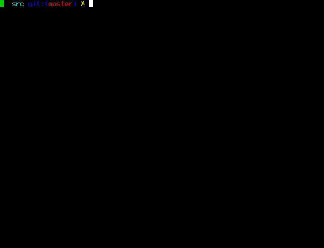

Zcash 5.10.0

What is Zcash?
Zcash is HTTPS for money.
Initially based on Bitcoin's design, Zcash has been developed from the Zerocash protocol to offer a far higher standard of privacy and anonymity. It uses a sophisticated zero-knowledge proving scheme to preserve confidentiality and hide the connections between shielded transactions. More technical details are available in our Protocol Specification.
The zcashd Full Node
This repository hosts the zcashd software, a Zcash consensus node
implementation. It downloads and stores the entire history of Zcash
transactions. Depending on the speed of your computer and network
connection, the synchronization process could take several days.

The zcashd code is derived from a source fork of
Bitcoin Core. The code was forked
initially from Bitcoin Core v0.11.2, and the two codebases have diverged
substantially.
:lock: Security Warnings
See important security warnings on the Security Information page.
Zcash is experimental and a work in progress. Use it at your own risk.
:ledger: Deprecation Policy
This release is considered deprecated 16 weeks after the release day. There is an automatic deprecation shutdown feature which will halt the node some time after this 16-week period. The automatic feature is based on block height.
Other Zcash Implementations
The Zebra project offers a different Zcash consensus node implementation, written largely from the ground up.
Getting Started
Please see our user guide for instructions on joining the main Zcash network.
Need Help?
- :blue_book: See the documentation at the ReadTheDocs for help and more information.
- :incoming_envelope: Ask for help on the Zcash forum.
- :speech_balloon: Join our community on Discord
- 🧑🎓: Learn at ZecHub
Participation in the Zcash project is subject to a Code of Conduct.
Building
Build Zcash along with most dependencies from source by running the following command:
./zcutil/build.sh -j$(nproc)
Currently, Zcash is only officially supported on Debian and Ubuntu. See the Debian / Ubuntu build for detailed instructions.
License
For license information see the file COPYING.
User Documentation
This section contains user documentation specific to zcashd.
See here for more general Zcash documentation, as well as
installation instructions for zcashd.
zcashd Release Support
Release cadence and support window
zcashd releases happen approximately every six weeks, although this may change if a
particular release is delayed, or if a hotfix release occurs.
Each zcashd release is generally supported for 16 weeks. Occasionally this changes for
individual releases (for example, near to a Network Upgrade activation).
These two policies mean that there are generally at least two separate zcashd versions
currently supported at any given time.
End-of-Support halt
Every zcashd version released by ECC has an End-of-Support height. When the Zcash chain
reaches this height, zcashd will automatically shut down, and the binary will refuse to
restart. This is for several reasons:
- The
zcashdmaintainers do not have the resources to maintain old versions ofzcashdindefinitely. - Each time a user upgrades their
zcashdnode, they are re-confirming that they are happy to run the Zcash consensus rules encoded in the version ofzcashdthey are running. This is an important part of the overall strategy for changes to the node and consensus rules; users who want to follow different rules (or even just have a different End-of-Support halt policy) will obtain azcashdbinary from some other source, with its own support policies. - Knowing that old versions will shut down is useful for planning backwards-incompatible
changes in Network Upgrades. A Network Upgrade activation can be targeted for a height
where we know that all released
zcashdversions which did not support the Network Upgrade will have shut down by the time the Network Upgrade activates.
End-of-Support heights
The End-of-Support height for a running zcashd can be queried over JSON-RPC using the
getdeprecationinfo method.
The following table shows End-of-Support information for recent zcashd releases. It is
automatically updated during each release. "End of Support" dates are estimated at that
time, and may shift due to changes in network solution power.
zcashd version | Release date | Halt height | End of Support |
|---|---|---|---|
| 5.9.1-rc1 | 2024-05-22 | 2643624 | 2024-09-11 |
| 5.9.1 | 2024-05-23 | 2644900 | 2024-09-12 |
| 5.10.0-rc1 | 2024-08-22 | 2700600 | 2024-10-31 |
| 5.10.0 | 2024-08-27 | 2706540 | 2024-11-05 |
Platform Support
Support for different platforms (build "targets" and operating systems) are organised into three tiers, each with a different set of guarantees. For more information on the policies for targets at each tier, see the Platform Tier Policy.
Tier 1
Tier 1 platforms can be thought of as "guaranteed to work". ECC builds official binary releases for each tier 1 platform, and automated testing ensures that each tier 1 platform builds and passes tests after each change.
"End of Support" dates are the latest currently-known date after which the platform will be removed from tier 1. These dates are subject to change.
| target | OS | End of Support |
|---|---|---|
x86_64-pc-linux-gnu | Debian 11 | June 2026 |
| Debian 12 | June 2028 | |
| Ubuntu 20.04 | April 2025 |
Tier 2
Tier 2 platforms can be thought of as "guaranteed to build". ECC builds official binary releases for each tier 2 platform, and automated builds ensure that each tier 2 platform builds after each change. Automated tests are not always run so it's not guaranteed to produce a working build, but tier 2 platforms often work to quite a good degree, and patches are always welcome!
"End of Support" dates are the latest currently-known date after which the platform will be removed from tier 2. These dates are subject to change.
| target | OS | End of Support |
|---|---|---|
| N/A |
Tier 3
Tier 3 platforms are those for which the zcashd codebase has support, but ECC does not
require builds or tests to pass, so these may or may not work. Official builds are not
available.
| target | OS | notes |
|---|---|---|
x86_64-pc-linux-gnu | Arch | |
| Ubuntu 22.04 | ||
x86_64-unknown-freebsd | FreeBSD | |
x86_64-w64-mingw32 | Windows | 64-bit MinGW |
x86_64-apple-darwin16 | macOS 10.14+ | |
aarch64-linux-gnu | ARM64 Linux |
Wallet Backup Instructions
Overview
Backing up your Zcash private keys is the best way to be proactive about preventing loss of access to your ZEC.
Problems resulting from bugs in the code, user error, device failure, etc. may lead to losing access to your wallet (and as a result, the private keys of addresses which are required to spend from them).
No matter what the cause of a corrupted or lost wallet could be, we highly recommend all users backup on a regular basis. Anytime a new address in the wallet is generated, we recommending making a new backup so all private keys for addresses in your wallet are safe.
Note that a backup is a duplicate of data needed to spend ZEC so where you keep your backup(s) is another important consideration. You should not store backups where they would be equally or increasingly susceptible to loss or theft.
Instructions for backing up your wallet and/or private keys
These instructions are specific for the officially supported Zcash Linux client. For backing up with third-party wallets, please consult with user guides or support channels provided for those services.
There are multiple ways to make sure you have at least one other copy of the private keys needed to spend your ZEC and view your shielded ZEC.
For all methods, you will need to include an export directory setting in your
config file (zcash.conf located in the data directory which is ~/.zcash/
unless it's been overridden with datadir= setting):
exportdir=path/to/chosen/export/directory
You may chose any directory within the home directory as the location for export & backup files. If the directory doesn't exist, it will be created.
Note that zcashd will need to be stopped and restarted for edits in the config file to take effect.
Using backupwallet
To create a backup of your wallet, use:
$ zcash-cli backupwallet <nameofbackup>
The backup will be an exact copy of the current state of your wallet.dat file stored in the export directory you specified in the config file. The file path will also be returned.
If you generate a new Zcash address, it will not be reflected in the backup file.
If your original wallet.dat file becomes inaccessible for whatever reason,
you can use your backup by copying it into your data directory and renaming the
copy to wallet.dat.
Using z_exportwallet & z_importwallet
If you prefer to have an export of your private keys in human readable format, you can use:
$ zcash-cli z_exportwallet <nameofbackup>`
This will generate a file in the export directory listing all transparent and shielded private keys with their associated public addresses. The file path will be returned in the command line.
To import keys into a wallet which were previously exported to a file, use:
$ zcash-cli z_importwallet <path/to/exportdir/nameofbackup>
Using z_exportkey, z_importkey, dumpprivkey & importprivkey
If you prefer to export a single private key for a shielded address, you can use:
$ zcash-cli z_exportkey <z-address>
This will return the private key and will not create a new file.
For exporting a single private key for a transparent address, you can use the command inherited from Bitcoin:
$ zcash-cli dumpprivkey <t-address>
This will return the private key and will not create a new file.
To import a private key for a shielded address, use:
$ zcash-cli z_importkey <z-priv-key>
This will add the key to your wallet and rescan the wallet for associated transactions if it is not already part of the wallet.
The rescanning process can take a few minutes for a new private key. To skip it, instead use:
$ zcash-cli z_importkey <z-private-key> no
For other instructions on fine-tuning the wallet rescan, see the command's help documentation:
$ zcash-cli help z_importkey
To import a private key for a transparent address, use:
$ zcash-cli importprivkey <t-priv-key>
This has the same functionality as z_importkey but works with transparent
addresses.
See the command's help documentation for instructions on fine-tuning the wallet rescan:
$ zcash-cli help importprivkey
Shielding Coinbase UTXOs
Summary
Use z_shieldcoinbase RPC call to shield coinbase UTXOs.
Who should read this document
Miners, Mining pools, Online wallets
Background
The current Zcash protocol includes a consensus rule that coinbase rewards must be sent to a shielded address.
User Experience Challenges
A user can use the z_sendmany RPC call to shield coinbase funds, but the call was not designed for sweeping up many UTXOs, and offered a suboptimal user experience.
If customers send mining pool payouts to their online wallet, the service provider must sort through UTXOs to correctly determine the non-coinbase UTXO funds that can be withdrawn or transferred by customers to another transparent address.
Solution
The z_shieldcoinbase call makes it easy to sweep up coinbase rewards from multiple coinbase UTXOs across multiple coinbase reward addresses.
z_shieldcoinbase fromaddress toaddress (fee) (limit)
The default fee is 0.0010000 ZEC and the default limit on the maximum number of UTXOs to shield is 50.
Examples
Sweep up coinbase UTXOs from a transparent address you use for mining:
zcash-cli z_shieldcoinbase tMyMiningAddress zMyPrivateAddress
Sweep up coinbase UTXOs from multiple transparent addresses to a shielded address:
zcash-cli z_shieldcoinbase "*" zMyPrivateAddress
Sweep up with a fee of 1.23 ZEC:
zcash-cli z_shieldcoinbase tMyMiningAddress zMyPrivateAddress 1.23
Sweep up with a fee of 0.1 ZEC and set limit on the maximum number of UTXOs to shield at 25:
zcash-cli z_shieldcoinbase "*" zMyPrivateAddress 0.1 25
Asynchronous Call
The z_shieldcoinbase RPC call is an asynchronous call, so you can queue up
multiple operations.
When you invoke
zcash-cli z_shieldcoinbase tMyMiningAddress zMyPrivateAddress
JSON will be returned immediately, with the following data fields populated:
- operationid: a temporary id to use with
z_getoperationstatusandz_getoperationresultto get the status and result of the operation. - shieldedUTXOs: number of coinbase UTXOs being shielded
- shieldedValue: value of coinbase UTXOs being shielded.
- remainingUTXOs: number of coinbase UTXOs still available for shielding.
- remainingValue: value of coinbase UTXOs still available for shielding
Locking UTXOs
The z_shieldcoinbase call will lock any selected UTXOs. This prevents the
selected UTXOs which are already queued up from being selected for any other
send operation. If the z_shieldcoinbase call fails, any locked UTXOs are
unlocked.
You can use the RPC call lockunspent to see which UTXOs have been locked.
You can also use this call to unlock any UTXOs in the event of an unexpected
system failure which leaves UTXOs in a locked state.
Limits, Performance and Transaction Confirmation
The number of coinbase UTXOs selected for shielding can be adjusted by setting the limit parameter. The default value is 50.
If the limit parameter is set to zero, the zcashd mempooltxinputlimit option
will be used instead, where the default value for mempooltxinputlimit is
zero, which means no limit.
Any limit is constrained by a hard limit due to the consensus rule defining a maximum transaction size of 100,000 bytes.
In general, the more UTXOs that are selected, the longer it takes for the
transaction to be verified. Due to the quadratic hashing problem, some miners
use the mempooltxinputlimit option to reject transactions with a large number
of UTXO inputs.
Currently, as of November 2017, there is no commonly agreed upon limit, but as a rule of thumb (a form of emergent consensus) if a transaction has less than 100 UTXO inputs, the transaction will be mined promptly by the majority of mining pools, but if it has many more UTXO inputs, such as 500, it might take several days to be mined by a miner who has higher or no limits.
Anatomy of a z_shieldcoinbase transaction
The transaction created is a shielded transaction. It consists of a single joinsplit, which consumes coinbase UTXOs as input, and deposits value at a shielded address, minus any fee.
The number of coinbase UTXOs is determined by a user configured limit.
If no limit is set (in the case when limit parameter and mempooltxinputlimit
options are set to zero) the behaviour of z_shieldcoinbase is to consume as
many UTXOs as possible, with z_shieldcoinbase constructing a transaction up
to the size limit of 100,000 bytes.
As a result, the maximum number of inputs that can be selected is:
- P2PKH coinbase UTXOs ~ 662
- 2-of-3 multisig P2SH coinbase UTXOs ~ 244.
Here is an example of using z_shieldcoinbase on testnet to shield multi-sig coinbase UTXOs.
- Block 141042 is almost ~2 MB in size (the maximum size for a block) and
contains 1 coinbase reward transaction and 20 transactions, each indivually
created by a call to z_shieldcoinbase.
- https://explorer.testnet.z.cash/block/0050552a78e97c89f666713c8448d49ad1d7263274422272696187dedf6c0d03
- Drilling down into a transaction, you can see there is one joinsplit, with
244 inputs (vin) and 0 outputs (vout).
- https://explorer.testnet.z.cash/tx/cf4f3da2e434f68b6e361303403344e22a9ff9a8fda9abc180d9520d0ca6527d
Data Directory Files
Files within the zcashd data directory (~/.zcash/ on Linux unless otherwise specified)
include:
| File | Description |
|---|---|
zcash.conf | contains configuration settings for zcashd |
zcashd.pid | stores the process id of zcashd while running |
blocks/blk000*.dat | block data (custom, 128 MiB per file) |
blocks/rev000*.dat | block undo data (custom) |
blocks/index/* | block index (LevelDB) |
chainstate/* | block chain state database (LevelDB) |
database/* | BDB database environment |
db.log | wallet database log file |
debug.log | contains debug information and general logging generated by zcashd |
peers.dat | peer IP address database (custom format) |
wallet.dat | personal wallet (BDB) with keys and transactions (keep private, back this up!) |
.cookie | session RPC authentication cookie (written at start when cookie authentication is used, deleted on shutdown) |
.lock | data directory lock file (empty) |
testnet3/* | contains testnet versions of these files, except zcash.conf, if running -testnet |
onion_private_key | cached Tor hidden service private key for -listenonion |
zcashd metrics
Metrics UI
This is the user interface that zcashd displays by default when run. It
displays a small selection of interesting metrics, but is not intended for
programmatic consumption.
RPC methods
zcashd provides the following JSON-RPC methods that expose node metrics:
- Chain:
getblockchaininfo: Various state info regarding block chain processing.gettxoutsetinfo: Statistics about the unspent transparent transaction output set.getmempoolinfo: Details on the active state of the TX memory pool.
- P2P network:
getnetworkinfo: Various state info regarding P2P networking.getpeerinfo: Data about each connected network node.getdeprecationinfo: The current node version and deprecation block height.
- Miscellaneous
getmemoryinfo: Information about memory usage.getmininginfo: Mining-related information.getinfo(deprecated): A small subset of the above metrics.
You can see what each method provides with zcash-cli help METHOD_NAME.
Prometheus support
zcashd can optionally expose an HTTP server that acts as a Prometheus scrape
endpoint. The server will respond to GET requests on any request path.
To enable the endpoint, add -prometheusport=<port> to your zcashd
configuration (either in zcash.conf or on the command line). After
restarting zcashd you can then test the endpoint by querying it:
$ curl http://127.0.0.1:<port>
# TYPE zcash_net_out_messages counter
zcash_net_out_messages 181
# TYPE zcash_net_in_bytes_total counter
zcash_net_in_bytes_total 3701998
# TYPE zcash_net_in_messages counter
zcash_net_in_messages 184
# TYPE zcashd_build_info counter
zcashd_build_info{version="v4.2.0"} 1
# TYPE zcash_chain_verified_block_total counter
zcash_chain_verified_block_total 162
...
By default, access is restricted to localhost. This can be expanded with
-metricsallowip=<ip>, which can specify IPs or subnets. Note that HTTPS is
not supported, and therefore connections to the endpoint are not encrypted or
authenticated. Access to the endpoint should be assumed to compromise the
privacy of node operations, by the provided metrics and/or by timing side
channels. Non-localhost access is strongly discouraged if the node has a
wallet holding live funds.
Metrics collection with Docker
A docker-compose.yml has been provided in ./contrib/metrics that sets up
local instances of prometheus and grafana and provides a dashboard that
charts several of the various metrics exposed by zcashd's prometheus
endpoint. Note that both docker and docker-compose must ordinarily be run
with superuser permissions (use sudo) when running on Linux.
docker-compose up1 will start local instances of prometheus and grafana,
accessible over HTTP on ports 9090 and 3030, respectively.
cd <zcash_root>/contrib/metrics
docker-compose up -d
(substitute the root directory where you have checked out the zcash git
repository for <zcash_root>)
~/.zcash/zcash.conf must be updated to enable prometheus and to allow the
prometheus server launched via docker-compose to connect to the zcashd
prometheus endpoint. The following commands can be used to detect the local IP
address for the prometheus server and add it to the ~/.zcash/zcash.conf
file.
First, figure out where prometheus is running.
export PROMETHEUS_DOCKER_IP=$(docker inspect -f '{{range .NetworkSettings.Networks}}{{.IPAddress}}{{end}}' zcashd-prometheus)
Then, update your ~/.zcash/zcash.conf file to open port 9969 and allow
connections from the zcashd-prometheus docker container.
cat << PROM_CONF >> ~/.zcash/zcash.conf
prometheusport=9969
metricsallowip=$PROMETHEUS_DOCKER_IP/32
PROM_CONF
You may then (re)start zcashd and navigate to
http://localhost:9090/targets?search=
to verify that the prometheus server is able to connect to the zcashd
prometheus endpoint; you should see the host
http://host.docker.internal:9969/ having UP status. Once this is working,
navigate to
http://localhost:3030/d/U4U58t-Gk/zcashd-metrics
to view the dashboard. The username and password for this local grafana
instance are set by default to admin/admin; the UI will ask you to change
this on first use. Data gathered by the running prometheus instance and changes
that you make to the grafana interface will be persisted across restarts.
Manual Docker Setup Without docker-compose
The example instructions below were tested on Windows 10 using Docker Desktop
with the WSL 2 backend, connected to a zcashd running inside WSL2 (but not
inside Docker):
# Create a storage volume for Grafana (once)
docker volume create grafana-storage
# Create a storage volume for Prometheus (once)
docker volume create prometheus-storage
# Run Prometheus
# You will need to modify $(zcash_root)/contrib/metrics/prometheus.yaml to match the
# port configured with -prometheusport and -metricsbind / -metricsallowip
# (and possibly also for your Docker network setup).
docker run --detach -p 9090:9090 --volume prometheus-storage:/prometheus --volume $(zcash_root)/contrib/metrics/prometheus.yaml:/etc/prometheus/prometheus.yml prom/prometheus
# Run Grafana
docker run --detach -p 3030:3030 --env GF_SERVER_HTTP_PORT=3030 --volume grafana-storage:/var/lib/grafana grafana/grafana
This requires a running Docker daemon. See the relevant section of the Docker Engine manual.
Tor Support in Zcash
Tor can be used to provide a layer of network anonymity for Zcash users. Additionally, Zcash users may chose to connect only to Tor hidden services, and also to expose their own Tor hidden service to allow users to connect to them over the Tor network.
- Install Tor
The easiest way to install Tor is to use the Tor Browser Bundle. For headless installs, you probably want to install the Tor daemon. The Tor Project provides instructions for doing this on common Linux distributions. Note that the Tor Browser Bundle exposes a SOCKS listener on tcp/9150 by default, while the Tor daemon exposes the SOCKS listener on tcp/9050. For the purposes of the example below, we'll assume that you're using the Tor daemon and that the SOCKS listener is on tcp/9050.
- Run zcashd over Tor
Configuring zcashd to use a Tor SOCKS proxy will route all outgoing connections over Tor.
$ zcashd -proxy=127.0.0.1:9050
Yay! Your zcashd node is now leveraging the Tor network to connect to other zcashd nodes. But there's more fun to be had. By creating a Tor Hidden Service. you can help promote privacy for Zcash users by advertising your node's .onion address to other Tor Zcash users.
- Expose your zcashd via a Tor hidden service (optional)
Edit your /etc/tor/torrc (or equivalent config file) to map the hidden service to your zcashd TCP listener. The directory can be whatever you like but the port numbers should be equal to the zcashd p2p listen port (8233 by default). An example is below.
############### This section is just for location-hidden services ###
## Once you have configured a hidden service, you can look at the
## contents of the file ".../hidden_service/hostname" for the address
## to tell people.
##
## HiddenServicePort x y:z says to redirect requests on port x to the
## address y:z.
#
# Placeholder for when zcashd adds support for Onion v3 addresses
#HiddenServiceDir /var/lib/tor/zcash_hidden_service_v3/
#HiddenServiceVersion 3
#HiddenServicePort 8233 127.0.0.1:8233
# use the generated v2 Onion hostname until v3 support is complete
HiddenServiceDir /var/lib/tor/zcash_hidden_service_v2/
HiddenServiceVersion 2
HiddenServicePort 8233 127.0.0.1:8233
Note that zcashd does not yet support Onion v3 addresses, but will do so before v2 addresses are removed from Tor. See this issue for more information on what's required to make zcashd support v3 Onion addresses.
After making these edits to /etc/tor/torrc, restart tor to create the hidden service hostname and keys.
$ sudo systemctl restart tor
Then set a bash variable to provide your Onion service hostname to zcashd so it can advertise your node to other Tor capable nodes on the Zcash network.
$ export MY_ONION_HOSTNAME=`sudo cat /var/lib/tor/zcash_hidden_service_v2/hostname`
Now configure the zcashd node to use the Tor proxy, enable the TCP listener (only on localhost), and advertise your onion address so that other nodes on the Zcash network can connect to you over Tor.
$ zcashd -proxy=127.0.0.1:9050 -externalip=$MY_ONION_HOSTNAME -listen -bind=127.0.0.1 -listenonion=0
zcashd flags used:
-proxy=ip:port: sets the proxy server. This must match the port IP and port on which your Tor listener is configured.-externalip=<ip|host>: sets the publicly routable address that zcashd will advertise to other zcash nodes. This can be an IPv4, IPv6 or .onion address. Onion addresses are given preference for advertising and connections. Onionv3 addresses are not yet supported.-listen: Enable listening for incoming connections with this flag; listening is off by default, but is needed in order for Tor to connect to zcashd.-bind=ip: Bind (only) to this IP. Will bind to all interfaces by default iflisten=1.-listenonion=<0|1>: Enable or disable autoconfiguration of Tor hidden service via control socket API. Disabled in this example because we manually configured the hidden service in /etc/tor/torrc.
Once your node is up and running, you can use zcash-cli to verify that it
is properly connected to other Zcash nodes over the p2p network, and is
correctly advertising its Onion address to the network.
$ zcash-cli getnetworkinfo
{
"version": 4020050,
"subversion": "/MagicBean:4.2.0/",
"protocolversion": 170013,
"connections": 9,
"networks": [
{
"name": "ipv4",
"limited": true,
"reachable": false,
"proxy": "127.0.0.1:9050",
"proxy_randomize_credentials": true
},
{
"name": "ipv6",
"limited": true,
"reachable": false,
"proxy": "127.0.0.1:9050",
"proxy_randomize_credentials": true
},
{
"name": "onion",
"limited": false,
"reachable": true,
"proxy": "127.0.0.1:9050",
"proxy_randomize_credentials": true
}
],
"relayfee": 0.00000100,
"localaddresses": [
{
"address": "ynizm2wpla6ec22q.onion",
"port": 8233,
"score": 10
}
],
}
- Dynamically Configure Onion Service (Optional)
Starting with Tor version 0.2.7.1 it is possible, through Tor's control socket API, to create and destroy 'ephemeral' hidden services programmatically. zcashd has been updated to make use of this.
This configuration could be used instead of manually configuring the Onion service as in step 2 above.
If Tor is running (and proper authentication has been configured), zcashd automatically creates a hidden service to listen on. zcashd will also use Tor automatically to connect to other .onion nodes if the control socket can be successfully opened.
This new feature is enabled by default if zcashd is listening (-listen) and
requires a Tor connection to work. It can be explicitly disabled with
-listenonion=0 and, if not disabled, configured using the -torcontrol
and -torpassword settings. To show verbose debugging information, pass
-debug=tor.
Connecting to Tor's control socket API requires one of two authentication methods to be configured:
- Cookie authentication, which requires write access to the
CookieAuthFilespecified in Tor configuration. In some cases, this is preconfigured and the creation of a hidden service is automatic. If permission problems are seen with-debug=torthey can be resolved by adding both the user running tor and the user running zcashd to the same group and setting permissions appropriately. On Debian-based systems the user running zcashd can be added to the debian-tor group, which has the appropriate permissions. - Authentication with the
-torpasswordflag and ahash-password, which can be enabled and specified in Tor configuration.
On Debian systems, where Tor is installed via APT, you can trivially permit
zcashd to connect to the Tor socket by adding the zcash user to the
debian-tor group.
$ sudo usermod -aG debian-tor zcash
When properly configured, this will allow zcashd to automatically connect to the Tor control socket API and configure an ephemeral hidden service.
$ zcashd -debug=tor
Feb 11 15:26:20.323 INFO main: tor: Got service ID tweustb4j6o3u5x7, advertizing service tweustb4j6o3u5x7.onion:8233
Feb 11 15:26:20.323 DEBUG tor: tor: Cached service private key to /home/zcash/.zcash/onion_private_key
Feb 11 15:26:20.323 INFO main: AddLocal(tweustb4j6o3u5x7.onion:8233,4)
...
Feb 11 15:26:47.565 INFO main: ProcessMessages: advertizing address tweustb4j6o3u5x7.onion:8233
- Connect to a single Zcash Onion server
This invocation will start zcashd and connect via Tor to a single zcashd onion server.
Launch zcashd as follows:
$ zcashd -onion=127.0.0.1:9050 -connect=ynizm2wpla6ec22q.onion
-onion=ip:port: Use SOCKS5 proxy to reach peers via Tor hidden services. This must match the port IP and port on which your Tor listener is configured.-connect=<hostname|ip>: Connect only to the specified node(s);-noconnector-connect=0alone to disable automatic connections
Now use zcash-cli to verify there is only a single peer connection.
$ zcash-cli getpeerinfo
[
{
"id": 1,
"addr": "ynizm2wpla6ec22q.onion",
...
"version": 170013,
"subver": "/MagicBean:4.2.0/",
"inbound": false,
...
}
]
- Connect to multiple Zcash Onion servers
This invocation will start zcashd, skip DNS seeding, connect via Tor to a multiple zcashd onion servers, and also advertise your Onion server to other Tor capable Zcash nodes.
Launch zcashd as follows:
$ export MY_ONION_HOSTNAME=`sudo cat /var/lib/tor/zcash_hidden_service_v2/hostname`
$ zcashd -listen -onion=127.0.0.1:9050 -addnode=ynizm2wpla6ec22q.onion -dnsseed=0 -onlynet=onion -externalip=$MY_ONION_HOSTNAME -bind=127.0.0.1
zcashd flags used:
-onion=ip:port: Use SOCKS5 proxy to reach peers via Tor hidden services. This must match the port IP and port on which your Tor listener is configured.-addnode=<host|ip>: Add a node to connect to and attempt to keep the connection open-externalip=<ip|onion>: sets the publicly routable address that zcashd will advertise to other zcash nodes. This can be an IPv4, IPv6 or .onion address. Onion addresses are given preference for advertising and connections. Onionv3 addresses are not yet supported.-listen: Enable listening for incoming connections with this flag; listening is off by default, but is needed in order for Tor to connect to zcashd.-bind=<ip>: Bind (only) to this IP. Will bind to all interfaces by default iflisten=1andbindis not set.-onlynet=<net>: Only connect to nodes in network<net>(ipv4, ipv6 or onion)
Security Warnings
Security Audit
Zcash has been subjected to a formal third-party security review. For security announcements, audit results and other general security information, see https://z.cash/support/security.html
Wallet Encryption
Wallet encryption is disabled, for several reasons:
-
Encrypted wallets are unable to correctly detect shielded spends (due to the nature of unlinkability of JoinSplits) and can incorrectly show larger available shielded balances until the next time the wallet is unlocked. This problem was not limited to failing to recognize the spend; it was possible for the shown balance to increase by the amount of change from a spend, without deducting the spent amount.
-
While encrypted wallets prevent spending of funds, they do not maintain the shielding properties of JoinSplits (due to the need to detect spends). That is, someone with access to an encrypted wallet.dat has full visibility of your entire transaction graph (other than newly-detected spends, which suffer from the earlier issue).
-
We were concerned about the resistance of the algorithm used to derive wallet encryption keys (inherited from Bitcoin) to dictionary attacks by a powerful attacker. If and when we re-enable wallet encryption, it is likely to be with a modern passphrase-based key derivation algorithm designed for greater resistance to dictionary attack, such as Argon2i.
You should use full-disk encryption (or encryption of your home directory) to protect your wallet at rest, and should assume (even unprivileged) users who are running on your OS can read your wallet.dat file.
Side-Channel Attacks
This implementation of Zcash is not resistant to side-channel attacks. You
should assume (even unprivileged) users who are running on the hardware, or who
are physically near the hardware, that your zcashd process is running on
will be able to:
-
Determine the values of your secret spending keys, as well as which notes you are spending, by observing cache side-channels as you perform a JoinSplit operation. This is due to probable side-channel leakage in the libsnark proving machinery.
-
Determine which notes you own by observing cache side-channel information leakage from the incremental witnesses as they are updated with new notes.
-
Determine which notes you own by observing the trial decryption process of each note ciphertext on the blockchain.
You should ensure no other users have the ability to execute code (even
unprivileged) on the hardware your zcashd process runs on until these
vulnerabilities are fully analyzed and fixed.
REST Interface
The REST interface is a feature inherited from upstream Bitcoin. By default, it is disabled. We do not recommend you enable it until it has undergone a security review.
RPC Interface
Users should choose a strong RPC password. If no RPC username and password are set, zcashd will not start and will print an error message with a suggestion for a strong random password. If the client knows the RPC password, they have at least full access to the node. In addition, certain RPC commands can be misused to overwrite files and/or take over the account that is running zcashd. (In the future we may restrict these commands, but full node access – including the ability to spend from and export keys held by the wallet – would still be possible unless wallet methods are disabled.)
Users should also refrain from changing the default setting that only allows RPC connections from localhost. Allowing connections from remote hosts would enable a MITM to execute arbitrary RPC commands, which could lead to compromise of the account running zcashd and loss of funds. For multi-user services that use one or more zcashd instances on the backend, the parameters passed in by users should be controlled to prevent confused-deputy attacks which could spend from any keys held by that zcashd.
Block Chain Reorganization: Major Differences
Users should be aware of new behavior in Zcash that differs significantly from Bitcoin: in the case of a block chain reorganization, Bitcoin's coinbase maturity rule helps to ensure that any reorganization shorter than the maturity interval will not invalidate any of the rolled-back transactions. Zcash keeps Bitcoin's 100-block maturity interval for generation transactions, but because JoinSplits must be anchored within a block, this provides more limited protection against transactions becoming invalidated. In the case of a block chain reorganization for Zcash, all JoinSplits which were anchored within the reorganization interval and any transactions that depend on them will become invalid, rolling back transactions and reverting funds to the original owner. The transaction rebroadcast mechanism inherited from Bitcoin will not successfully rebroadcast transactions depending on invalidated JoinSplits if the anchor needs to change. The creator of an invalidated JoinSplit, as well as the creators of all transactions dependent on it, must rebroadcast the transactions themselves.
Receivers of funds from a JoinSplit can mitigate the risk of relying on funds received from transactions that may be rolled back by using a higher minconf (minimum number of confirmations).
Logging z_* RPC calls
The option -debug=zrpc covers logging of the z_* calls. This will reveal
information about private notes which you might prefer not to disclose. For
example, when calling z_sendmany to create a shielded transaction, input
notes are consumed and new output notes are created.
The option -debug=zrpcunsafe covers logging of sensitive information in z_*
calls which you would only need for debugging and audit purposes. For example,
if you want to examine the memo field of a note being spent.
Private spending keys for z addresses are never logged.
Potentially-Missing Required Modifications
In addition to potential mistakes in code we added to Bitcoin Core, and potential mistakes in our modifications to Bitcoin Core, it is also possible that there were potential changes we were supposed to make to Bitcoin Core but didn't, either because we didn't even consider making those changes, or we ran out of time. We have brainstormed and documented a variety of such possibilities in issue #826, and believe that we have changed or done everything that was necessary for the 1.0.0 launch. Users may want to review this list themselves.
Deprecated Features
In order to support the continuous improvement of zcashd, features are
periodically deprecated and removed when they have been superseded or are no
longer useful. Deprecation follows a 3-stage process:
- Initially, a feature will be marked as DEPRECATED in the release notes and
user-facing documentation, but no other changes are made; the feature
continues to be available and function as normal. While features at this
stage remain enabled by default, they may be explicitly disabled by
specifying
-allowdeprecated=noneon the command line when starting the node, or by includingallowdeprecated=noneas a line in thezcash.conffile. - In the next stage of deprecation, the feature will be disabled by default.
Disabled features may be reenabled via use of the
-allowdeprecatedflag. - In the third stage, the feature is fully removed and is no longer available.
Features that enter Stage 1 in a particular release will be disabled by default
after no fewer than 3 releases that update zcashd's minor-version, and
features will only be fully removed after a total of at least 6 minor-version updates.
zcashd's release schedule intends to produce a release that updates the minor
version every 6 weeks, so deprecated features remain accessible by default for
approximately 18 weeks, and then can be expected to be removed no less than 36
weeks after their initial deprecation. Deprecation and removal timelines might
be extended beyond this on a case-by-case basis to satisfy user requirements.
Currently Deprecated
Stage 1
The following features are deprecated, but remain enabled by default. These features
will be disabled if -allowdeprecated=none is added to the CLI arguments when starting
the node, or if an allowdeprecated=none line is added to zcash.conf.
feature | Deprecated | Feature details |
|---|---|---|
z_getbalance | 5.0.0 | The z_getbalance RPC method. |
z_gettotalbalance | 5.0.0 | The z_gettotalbalance RPC method. |
gbt_oldhashes | 5.4.0 | The finalsaplingroothash, lightclientroothash, and blockcommitmentshash fields in the output of getblocktemplate, which are replaced by the defaultroots field. |
deprecationinfo_deprecationheight | 5.5.0 | The deprecationheight field returned by the getdeprecationinfo RPC method has been replaced by the end_of_service object. |
Stage 2
Each feature in the table below may be enabled by adding -allowdeprecated=<feature>
to the CLI arguments when starting the node, or by adding an allowdeprecated=<feature>
line to zcash.conf.
feature | Deprecated | Feature details |
|---|---|---|
legacy_privacy | 5.0.0 | The default "legacy" privacy policy for z_sendmany has been replaced by the FullPrivacy directive. |
getnewaddress | 5.0.0 | The getnewaddress RPC method. |
getrawchangeaddress | 5.0.0 | The getrawchangeaddress RPC method. |
z_getnewaddress | 5.0.0 | The z_getnewaddress RPC method. |
z_listaddresses | 5.0.0 | The z_listaddresses RPC method. |
addrtype | 5.0.0 | The type attribute is deprecated in the results of RPC methods that return address metadata. It is recommended that applications using this metadata be updated to use the pool or address_type attributes, which have replaced the type attribute, as appropriate. |
wallettxvjoinsplit | 5.1.0 | The vjoinsplit attribute returned by the gettransaction RPC method. |
Developer Documentation
This section contains documentation aimed at contributors to the zcashd codebase.
Expectations for DNS Seed operators
Zcash attempts to minimize the level of trust in DNS seeds, but DNS seeds still pose a small amount of risk for the network. As such, DNS seeds must be run by entities which have some minimum level of trust within the Zcash community.
Other implementations of Zcash software may also use the same seeds and may be more exposed. In light of this exposure, this document establishes some basic expectations for operating DNS seeds.
-
A DNS seed operating organization or person is expected to follow good host security practices, maintain control of applicable infrastructure, and not sell or transfer control of the DNS seed. Any hosting services contracted by the operator are equally expected to uphold these expectations.
-
The DNS seed results must consist exclusively of fairly selected and functioning Zcash nodes from the public network to the best of the operator's understanding and capability.
-
For the avoidance of doubt, the results may be randomized but must not single out any group of hosts to receive different results unless due to an urgent technical necessity and disclosed.
-
The results may not be served with a DNS TTL of less than one minute.
-
Any logging of DNS queries should be only that which is necessary for the operation of the service or urgent health of the Zcash network and must not be retained longer than necessary nor disclosed to any third party.
-
Information gathered as a result of the operators node-spidering (not from DNS queries) may be freely published or retained, but only if this data was not made more complete by biasing node connectivity (a violation of expectation (1)).
-
Operators are encouraged, but not required, to publicly document the details of their operating practices.
-
A reachable email contact address must be published for inquiries related to the DNS seed operation.
If these expectations cannot be satisfied the operator should discontinue providing services and contact the active Zcash development team as well as creating an issue in the Zcash repository.
Behavior outside of these expectations may be reasonable in some situations but should be discussed in public in advance.
See also
- zcash-seeder is a reference implementation of a DNS seed.
Rust in zcashd
zcashd is primarily a C++ codebase, but most new code is being written in Rust
where possible.
Auditing Rust dependencies
We use cargo-vet to audit our Rust dependencies. This means that after
adding a new dependency, or updating existing dependencies with cargo update,
CI will fail until corresponding audits have been added.
We also have a significant number of pre-existing unaudited dependency versions that are excluded from auditing checks. We aim to reduce this list over time. New entries should not be added to the exclusion list without justification.
To audit a dependency, first install cargo-vet and then follow the
"Performing Audits" guide. If you are updating a dependency then instead of
auditing the new version in its entirety, you can optionally just audit the
delta between the old and new versions - even if the old version is in the
"unaudited" exclusion list.
Adding new dependencies in online-Rust mode
The zcashd build system pins all dependencies, and in order to facilitate
reproducible builds, cargo is configured to run in offline mode with vendored
crates. This means that if, for example, you add the foobar crate to
Cargo.toml, you will likely see an error similar to this:
$ cargo check
error: no matching package named `foobar` found
location searched: registry `https://github.com/rust-lang/crates.io-index`
required by package `librustzcash v0.2.0 (/path/to/zcash)`
To add dependencies that are compatible with the reproducible build system, you need to follow these steps:
- First, if you've made changes to dependencies in
Cargo.toml, these must be reverted before the next step:git stash - Next, reconfigure the build system for "online" mode:
CONFIGURE_FLAGS=--enable-online-rust ./zcutil/build.sh - Now, introduce the dependency changes into
Cargo.toml. If you saved changes in Step 1 withgit stash, you can reapply them:git stash pop - Update
Cargo.lock:cargo check - Commit the changes to
Cargo.tomlandCargo.locktogether:git commit ./Cargo.{toml,lock} - Verify the reproducible build works in vendored/offline mode without the
--enable-online-rustflag:./zcutil/build.sh
Using an unpublished Rust dependency
Occasionally we may need to depend on an unpublished git revision of a crate.
We sometimes want to prove out API changes to the zcash_* Rust crates by
migrating zcashd to them first, before making a public crate release. Or we
might need to cut a zcashd release before some upstream dependency has
published a fix we need. In these cases, we use patch dependencies.
For example, to use an unpublished version of the orchard crate that includes
a new API, add the following patch to Cargo.toml:
[dependencies]
# This dependency is listed with a version, meaning it comes from crates.io; the
# patch goes into a [patch.crates-io] section.
orchard = "0.4"
...
[patch.crates-io]
orchard = { git = "https://github.com/zcash/orchard.git", rev = "..." }
Note that if the git repository contains a workspace of interconnected crates (for example, https://github.com/zcash/librustzcash), you will need to provide patches for each of the dependencies that reference the same git revision.
You also need to update .cargo/config.offline to add a replacement definition
for each (git, rev) pair. Run ./test/lint/lint-cargo-patches.sh to get the
lines that need to be present.
Finally, ./qa/supply-chain/config.toml needs to be updated to ignore patched
dependencies. Run cargo vet regenerate audit-as-crates-io, and then ensure the
newly-added lines are of the form audit-as-crates-io = false.
Using a local Rust dependency
During development, you can use a locally checked out version of a dependency
by applying a cargo patch.
For example, to use a local version of the orchard crate that includes a new
API, add the following patch to Cargo.toml:
[dependencies]
# This dependency is listed with a version, meaning it comes from crates.io; the
# patch goes into a [patch.crates-io] section.
orchard = "0.0"
...
[patch.crates-io]
# Comment out any existing patch, if present.
# orchard = { git = "https://github.com/zcash/orchard.git", rev = "..." }
# Add this patch (both relative and absolute paths work):
orchard = { path = "../relative/path/to/orchard" }
Usually you can apply a patch to use a locally checked out dependency without
needing to build zcashd in online-Rust mode. However, if your local changes
include a new dependency, you will need to ensure you are in online-Rust mode.
Regtest
Regtest ("regression test") is one of the three network types
supported by Zcash, the others being testnet and mainnet.
Regtest is an entirely local, self-contained mode -- your node or nodes
do not talk with peers out in the world. It gives you complete
control of the state of the blockchain and the sequence of events.
You start with an empty blockchain (just the genesis block, block 0).
Blocks can be mined instantly, and must be created explicitly.
You can run one or more regtest nodes on the same system.
The RPC tests
use regtest mode (usually starting multiple nodes), but you may use it
manually and interactively to learn, test, and experiment. Most often
just one node is used in this case.
Example session
Here's a sample session (after you've built zcashd and zcash-cli):
$ mkdir /tmp/regtest-datadir
$ cat <<EOF >/tmp/regtest-datadir/zcash.conf
regtest=1
rpcuser=u
rpcpassword=p
rpcport=18132
EOF
$ src/zcashd -daemon -datadir=/tmp/regtest-datadir
Watch tmp/regtest-datadir/regtest/debug.log to see what zcashd is doing.
It may also be useful to start zcashd with -debug to generate much
more logging. Now we can send RPCs to the node:
$ src/zcash-cli -datadir=/tmp/regtest-datadir getblockchaininfo
{
"chain": "regtest",
"blocks": 0,
"initial_block_download_complete": false,
"headers": 0,
(...)
}
# Generate (mine) three blocks:
$ src/zcash-cli -datadir=/tmp/regtest-datadir generate 3
[
"05040271f43f78e3870a88697eba201aa361ea5802c69eadaf920ff376787242",
"0469f2df43dda69d521c482679b2db3c637b1721222511302584ac75e057c859",
"0ab7a26e7b3b5dfca077728de90da0cfd1c49e1edbc130a52de4062b1aecac75"
]
$ src/zcash-cli -datadir=/tmp/regtest-datadir getblockchaininfo
{
"chain": "regtest",
"blocks": 3,
"initial_block_download_complete": true,
"headers": 3,
(...)
}
$ src/zcash-cli -datadir=/tmp/regtest-datadir stop
Zcash server stopping
$
Network upgrades
Zcash has adopted a series of
network upgrades.
On mainnet and testnet, these activate at
fixed, known block heights (example).
In regtest mode, you determine the activation heights. Upgrades may occur at
any height greater than 0, and multiple upgrades can occur at the same height. The upgrades
have a strict ordering (as shown in the upgrades source file); for example, Canopy can't
be activated before Blossom.
You specify the upgrade heights using multiple -nuparams=<branch-id> arguments.
(The branch IDs are available in the
upgrades.cpp file)
It's convenient to add these to the configuration file, for example:
$ cat <<EOF >>/tmp/regtest-datadir/zcash.conf
nuparams=76b809bb:1
nuparams=f5b9230b:5
EOF
(Alternatively, you can specify these on the zcashd command line.)
You need not activate every upgrade explicitly. The example activates Sapling
(branchID 76b809bb) at height 1; activating Sapling implies activating Overwinter, so this
is done automatically. Similarly, activating Heartwood at height 5
also simultaneously activates Blossom. Since no later upgrades are specified, none
of them will activate, regardless of height reached.
IMPORTANT: if you change the network upgrade heights from one test run to the next, it's almost always necessary to start fresh by removing the data directory, otherwise you'll encounter strange errors.
You can see which network upgrades are currently active and which are pending
(using the above nuparams settings as an example):
$ src/zcash-cli -datadir=/tmp/regtest-datadir generate 2
$ src/zcash-cli -datadir=/tmp/regtest-datadir getblockchaininfo
{
"blocks": 2,
(...)
"upgrades": {
"5ba81b19": {
"name": "Overwinter",
"activationheight": 1,
"status": "active",
"info": "See https://z.cash/upgrade/overwinter/ for details."
},
"76b809bb": {
"name": "Sapling",
"activationheight": 1,
"status": "active",
"info": "See https://z.cash/upgrade/sapling/ for details."
},
"2bb40e60": {
"name": "Blossom",
"activationheight": 5,
"status": "pending",
"info": "See https://z.cash/upgrade/blossom/ for details."
},
"f5b9230b": {
"name": "Heartwood",
"activationheight": 5,
"status": "pending",
"info": "See https://z.cash/upgrade/heartwood/ for details."
}
},
(...)
}
Manual testing within an RPC (Python) test run
It is often useful, either when debugging an issue or simply when you want to put
the node into a certain state, to use the RPC test framework to produce the desired
state and then be able to manually interrogate and modify that state using zcash-cli
to execute RPC calls. An easy way to do that is as follows:
Add the line import time; time.sleep(999999) (the units are seconds) somewhere
within an RPC test to pause its execution at that point. Start the test, and then:
$ ps alx | grep zcashd
0 1000 96247 96246 20 0 1426304 123952 futex_ SLl+ pts/12 0:18 /g/zcash/src/zcashd -datadir=/tmp/test9d907s8a/96246/node0 -keypool=1 -discover=0 -rest -nuparams=5ba81b19:1 -nuparams=76b809bb:1 -debug=mempool -mempooltxcostlimit=8000
0 1000 96274 96246 20 0 744092 85568 - RLl+ pts/12 0:05 /g/zcash/src/zcashd -datadir=/tmp/test9d907s8a/96246/node1 -keypool=1 -discover=0 -rest -nuparams=5ba81b19:1 -nuparams=76b809bb:1 -debug=mempool -mempooltxcostlimit=8000
$
Now you can interact with the running test node by copy-and-pasting its
-datadir argument, for example:
$ src/zcash-cli -datadir=/tmp/test9d907s8a/96246/node0 getblockchaininfo
(The other zcashd command-line arguments are generally not needed by
zcash-cli.) You can see the running node's debug log file:
$ cat /tmp/test9d907s8a/96246/node0/regtest/debug.log
or look at its configuration file.
$ cat /tmp/test9d907s8a/96246/node0/zcash.conf
In this way, the RPC test framework can teach us more about running regtest nodes.
Platform Tier Policy
General
ECC provides three tiers of platform support, modeled after the Rust Target Tier Policy:
- The Zcash developers provide no guarantees about tier 3 platforms; they exist in the codebase, but may or may not build.
- ECC's continuous integration checks that tier 2 platforms will always build, but they may or may not pass tests.
- ECC's continuous integration checks that tier 1 platforms will always build and pass tests.
Adding a new tier 3 platform imposes minimal requirements; we focus primarily on avoiding disruption to other ongoing Zcash development.
Tier 2 and tier 1 platforms place work on Zcash developers as a whole, to avoid breaking
the platform. The broader Zcash community may also feel more inclined to support
higher-tier platforms in their downstream uses of zcashd (though they are not obligated
to do so). Thus, these tiers require commensurate and ongoing efforts from the maintainers
of the platform, to demonstrate value and to minimize any disruptions to ongoing Zcash
development.
This policy defines the requirements for accepting a proposed platform at a given level of support.
Each tier builds on all the requirements from the previous tier, unless overridden by a stronger requirement.
While these criteria attempt to document the policy, that policy still involves human judgment. Platforms must fulfill the spirit of the requirements as well, as determined by the judgment of the approving reviewers. Reviewers and team members evaluating platforms and platform-specific patches should always use their own best judgment regarding the quality of work, and the suitability of a platform for the Zcash project. Neither this policy nor any decisions made regarding platforms shall create any binding agreement or estoppel by any party.
For a list of all supported platforms and their corresponding tiers ("tier 3", "tier 2", or "tier 1"), see Platform Support.
The availability or tier of a platform in Zcash releases is not a hard stability guarantee about the future availability or tier of that platform. Higher-level platform tiers are an increasing commitment to the support of a platform, and we will take that commitment and potential disruptions into account when evaluating the potential demotion or removal of a platform that has been part of a stable release. The promotion or demotion of a platform will not generally affect existing stable releases, only current development and future releases.
In this policy, the words "MUST" and "MUST NOT" specify absolute requirements that a platform must meet to qualify for a tier. The words "SHOULD" and "SHOULD NOT" specify requirements that apply in almost all cases, but for which the approving teams may grant an exception for good reason. The word "MAY" indicates something entirely optional, and does not indicate guidance or recommendations. This language is based on IETF RFC 2119.
Tier 3 platform policy
At this tier, ECC provides no official support for a platform, so we place minimal requirements on the introduction of platforms.
A proposed new tier 3 platform MUST be reviewed and approved by a member of the ECC core team based on these requirements.
- The platform MUST provide documentation for the Zcash community explaining how to build for the platform, using cross-compilation if possible. If the platform supports running binaries, or running tests (even if they do not pass), the documentation MUST explain how to run such binaries or tests for the platform, using emulation if possible or dedicated hardware if necessary.
- Tier 3 platforms MUST NOT impose burden on the authors of pull requests, or other developers in the community, to maintain the platform. In particular, do not post comments (automated or manual) on a PR that derail or suggest a block on the PR based on a tier 3 platform. Do not send automated messages or notifications (via any medium, including via @) to a PR author or others involved with a PR regarding a tier 3 platform, unless they have opted into such messages.
- Patches adding or updating tier 3 platforms MUST NOT break any existing tier 2 or tier 1 platform, and MUST NOT knowingly break another tier 3 platform without approval of the ECC core team.
If a tier 3 platform stops meeting these requirements, or the platform shows no signs of activity and has not built for some time, or removing the platform would improve the quality of the Zcash codebase, we MAY post a PR to remove it.
Tier 2 platform policy
At this tier, the Zcash developers guarantee that a platform builds, and will reject patches that fail to build for a platform. Thus, we place requirements that ensure the platform will not block forward progress of the Zcash project.
A proposed new tier 2 platform MUST be reviewed and approved by the ECC core team based on these requirements.
In addition, the ECC infrastructure team MUST approve the integration of the platform into Continuous Integration (CI), and the tier 2 CI-related requirements. This review and approval MAY take place in a PR adding the platform to CI, or simply by an infrastructure team member reporting the outcome of a team discussion.
- A tier 2 platform MUST have value to people other than its proponents. (It MAY still be a niche platform, but it MUST NOT be exclusively useful for an inherently closed group.)
- A tier 2 platform MUST have a designated team of developers (the "platform maintainers") supporting it, without the need for a paid support contract.
- The platform MUST NOT place undue burden on Zcash developers not specifically concerned with that platform. Zcash developers are expected to not gratuitously break a tier 2 platform, but are not expected to become experts in every tier 2 platform, and are not expected to provide platform-specific implementations for every tier 2 platform.
- The platform MUST build reliably in CI, for all components that ECC's CI considers mandatory.
- All requirements for tier 3 apply.
A tier 2 platform MAY be demoted or removed if it no longer meets these requirements.
Tier 1 platform policy
At this tier, the Zcash developers guarantee that a platform builds and passes all tests, and will reject patches that fail to build or pass the test suite on a platform. We hold tier 1 platforms to our highest standard of requirements.
- Tier 1 platforms MUST have substantial, widespread interest within the Zcash community, and MUST serve the ongoing needs of multiple production users of Zcash across multiple organizations or projects. These requirements are subjective. A tier 1 platform MAY be demoted or removed if it becomes obsolete or no longer meets this requirement.
- The platform MUST build and pass tests reliably in CI, for all components that ECC's CI considers mandatory.
- Building the platform and running the test suite for the platform MUST NOT take substantially longer than other platforms, and SHOULD NOT substantially raise the maintenance burden of the CI infrastructure.
- Tier 1 platforms MUST NOT have a hard requirement for signed, verified, or otherwise "approved" binaries. Developers MUST be able to build, run, and test binaries for the platform on systems they control, or provide such binaries for others to run. (Doing so MAY require enabling some appropriate "developer mode" on such systems, but MUST NOT require the payment of any additional fee or other consideration, or agreement to any onerous legal agreements.)
- All requirements for tier 2 apply.
A tier 1 platform MAY be demoted or removed if it no longer meets these requirements but still meets the requirements for a lower tier.
Deprecation Procedure
From time to time, features of zcashd and its associated wallet and RPC API are
deprecated to allow eventual removal of functionality that has been superseded
by more recent improvements. Deprecation follows a process whereby deprecate
features can be explicitly turned on or off using the
-allowdeprecated=<feature> CLI argument.
zcashd internally supports two sets of deprecated feature flags in
src/deprecation.h:
DEFAULT_ALLOW_DEPRECATEDcontains the set of features that remain available for use without having to be specifically enabled using-allowdeprecated.DEFAULT_DENY_DEPRECATEDcontains the set of features that are not enabled by default, and must be explicitly enabled using-allowdeprecated.
Deprecation of a feature occurs as a 3-step process:
- A deprecation flag is selected for the feature, and added to
DEFAULT_ALLOW_DEPRECATED. The fact of its deprecation is announced, and any functionality that supersedes the deprecated feature (if any) is documented, in the release notes. The stringDEPRECATEDis added to user-facing API documentation and CLI help text. - The deprecation flag is removed from
DEFAULT_ALLOW_DEPRECATEDand added toDEFAULT_DENY_DEPRECATED. - The deprecated feature is removed entirely, and its deprecation flag is removed.
Features that enter Stage 1 in a particular release should be disabled by
default after no fewer than 3 releases that update zcashd's
minor-version, and features should only be fully removed after a total of 6 minor-version
updates. zcashd's release schedule intends to produce a release that updates
the minor version every 6 weeks, so deprecated features remain accessible by
default for approximately 18 weeks, and then can be expected to be removed no
less than 36 weeks from their initial deprecation. The deprecation timeline for
each newly deprecated feature should be documented in
../user/deprecation.md.
Design
Zcash was originally a fork of Bitcoin 0.11.2, and as such the zcashd node architecture
is very similar to bitcoind. There are however several differences, most notably the
addition of shielded pools to the consensus logic and full node state.
In this section of the book, we describe the overall architecture that we inherit from
bitcoind, the changes we have made to the inherited components, and the new components
we have introduced.
Chain state
TBD
"Coins" view
TBD
Notes
- This is the main context in which
CTxOut::IsNull()is used. The other is a single spot in the mempool code. Once we've backported the per-txout CoinsDB we can hopefully eliminate this method.
P2P data propagation
This page contains notes about how block and transaction data is tracked and propagated by
zcashd. Most of this behaviour is inherited from Bitcoin Core, but some differences have
developed.
Some of this content is duplicated from in-code comments, but assembling this summary in one place is generally useful for understanding the overall dynamic :)
recentRejects
When a transaction is rejected by AcceptToMemoryPool, the transaction is added to the
recentRejects Bloom filter, so that we don't process it again. The Bloom filter resets
whenever the chain tip changes, as previously invalid transactions might become valid.
To prevent DoS attacks against wallets submitting transactions, recentRejects needs to
store a commitment to the entire transaction. This ensures that if a transaction is
malleated by a network peer to invalidate its authorizing data, the node will ignore
future advertisements of that specific transaction, but still request alternative versions
of the same txid (which might have valid authorizing data).
- For pre-v5 transactions, the txid commits to the entire transaction, and the wtxid is the txid with a globally-fixed (all-ones) suffix.
- For v5+ transactions, the wtxid commits to the entire transaction.
mapOrphanTransactions
Upstream uses this map to store transactions that are rejected by AcceptToMemoryPool
because the node doesn't have their transparent inputs. zcashd inherits this behaviour
but limits it to purely-transparent transactions (that is, if a transaction contains any
shielded components, the node rejects it as invalid and adds it to recentRejects).
mapOrphanTransactions indexes transactions by txid. This means that if an orphan
transaction is received (spending transparent UTXOs the node does not know about), and it
also happens to be invalid for other reasons (subsequent AcceptToMemoryPool rules that
haven't yet been checked), then the node will not request any v5+ transactions with the
same txid but different authorizing data. This does not create a DoS problem for wallets,
because an adversary that manipulated an orphan transaction to be invalid under the above
constraints would also need to prevent the orphan's parent from entering the mempool, and
eventually a parent is reached that is not an orphan. Once the orphan's direct parent is
accepted, the orphan is re-evaluated, and if it had been manipulated to be invalid, its
wtxid is added to recentRejects while its txid is removed from mapOrphanTransactions,
enabling the wallet to rebroadcast the unmodified transaction.